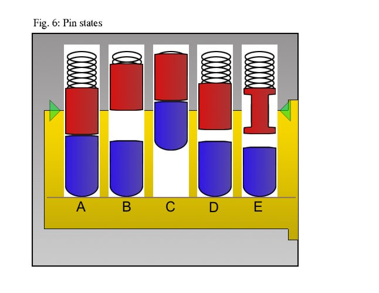

Donji (kodni) klinovi
Donji ili kodni klinovi (engl. key pins) nalaze se unutar jezgra cilindra i dolaze u direktan kontakt sa ključem kada ga ubacite u bravu. Ovi klinovi su različitih dužina, a njihove dimenzije tačno odgovaraju dubinama usjeka na vašem originalnom ključu. Kada u bravu stavite pravi ključ, njegovi usjeci podižu donje klinove tako da njihovi gornji vrhovi budu savršeno poravnati sa linijom razdvajanja (shear line). Pošto nemaju nikakve opruge ispod sebe, oni se oslanjaju isključivo na gornje klinove koji ih guraju nadole kada ključ nije u bravi.
Gornji (pogosnki) klinovi
Gornji ili pogonski klinovi (engl. driver pins) smješteni su u kućištu cilindra, direktno iznad donjih klinova, a pod stalnim su pritiskom opruga koje se nalaze na samom vrhu komore. Kod standardnih brava, ovi klinovi su uglavnom jednake dužine i imaju jednostavan valjkasti oblik. Kada ključ nije u bravi, opruge potiskuju gornje klinove nadole, tako da oni prelaze liniju razdvajanja i ulaze u jezgro cilindra. Na taj način, oni fizički blokiraju okretanje jezgra i čine bravu zaključanom sve dok se ne primijeni odgovarajući ključ koji će ih potisnuti nazad u kućište.
Profilni (sigurnosni) klinovi
Profilni ili sigurnosni klinovi (engl. security pins) predstavljaju modifikovane gornje (a ponekad i donje) klinove koji su posebno dizajnirani da spriječe neovlašćeno otvaranje brave metodama češljanja i pipanja. Umjesto običnog valjkastog oblika, ovi klinovi imaju specifične geometrije, pa se tako najčešće srijeću u obliku pečurke (mushroom pins), kalema za konac (spool pins) ili sa sitnim nazubljenjima (serrated pins). Kada provalnik pokuša da otvori bravu pomoću kuka i napinjača, ovi specifični oblici namjerno zapinju za ivice linije razdvajanja, stvarajući lažni osjećaj da je klin uspješno postavljen (tzv. false set), čime se drastično otežava manipulacija i povećava bezbjednost cilindra.